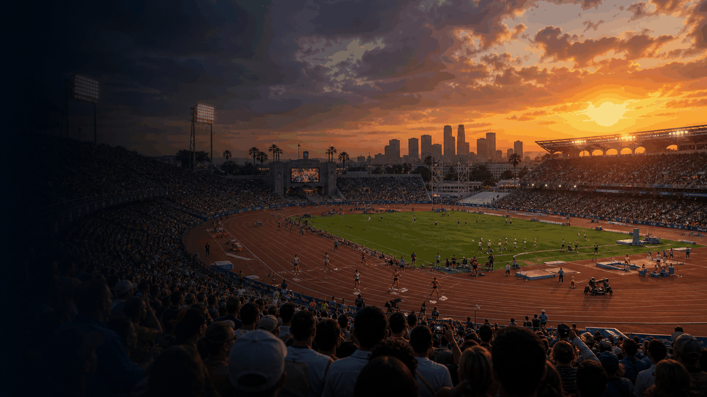
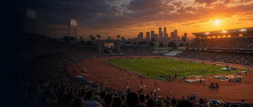

Multi Sport event guide
Summer Olympics
A compact OneSliders guide to Summer Olympics: what it is, how the current edition works and which parts matter most.
First trackedEvergreen event
FrequencyEvery 4 years
Next edition2028
Format sizeProgramme parts
History viewEdition results and parts
Use the year switcher for recent editions. The selected edition stays inside this framed sport view.

More Multi SportInterested in more Multi Sport?Explore related events, places and calendar moments.